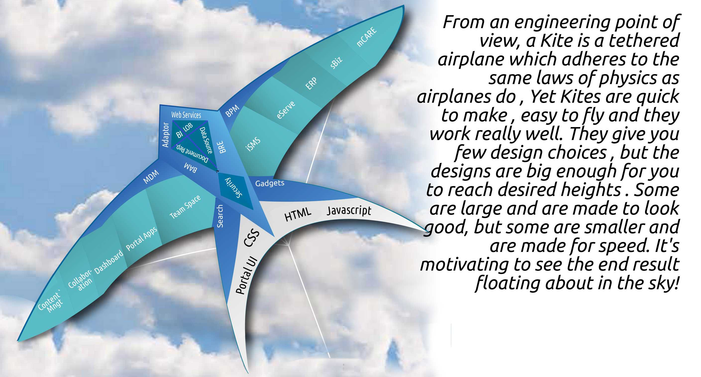

	<section class="top-space">
		<div class="row">
			<div class="col-lg-12">
				
					<!--START KITE Interaction-->
					<div class="row">
						<div class="col-lg-8 col-sm-12 col-xs-12">
						<!--START KITE MAP-->
							<div>
								
							</div>
						</div>
						<!--START KITE TEXT-->
						<div class="col-lg-4 col-md-12 col-sm-12 col-xs-12">
						<h2 class="text-center">KITE FRAMEWORK</h2>
							<div class="panel panel-kvaliteta  no-border-radius">
							
								<div class="panel-heading"><h3 class="panel-title">PRINCIPLES OF KITE</h3></div>
								<ul class="list-group">
									<li><i class="fas fa-chevron-right"></i>BUILD TO CHANGE INSTEAD OF BUILDING TO LAST</li>
									<li><i class="fas fa-chevron-right"></i>MODEL TO ANALYZE & REDUCE RISK</li>
									<li><i class="fas fa-chevron-right"></i>USE MODELS & COLLABORATION TOOL</li>
									<li><i class="fas fa-chevron-right"></i>IDENTIFY KEY ENGINEERING DECISIONS</li>
								</ul>
								<div class="panel-heading"><h3 class="panel-title">FEATURES</h3></div>
								<ul class="list-group kva-list">
									<li><i class="fas fa-chevron-right"></i>FOR BOTH JAVA & WINDOWS.NET PLATFORMS</li>
									<li><i class="fas fa-chevron-right"></i>CUSTOMIZABLE</li>
								</ul>
								<div class="panel-heading"><h3 class="panel-title">BENEFITS</h3></div>
								<ul class="list-group kva-list">
									<li><i class="fas fa-chevron-right"></i>QUICK DEPLOYMENT</li>
									<li><i class="fas fa-chevron-right"></i>ADAPTABILITY</li>
									<li><i class="fas fa-chevron-right"></i>FLEXIBILITY</li>
								</ul>
							</div>
						</div><!--END KITE text-->
					</div><!--END KITE Interaction-->
			</div>
		</div>
	</section>
